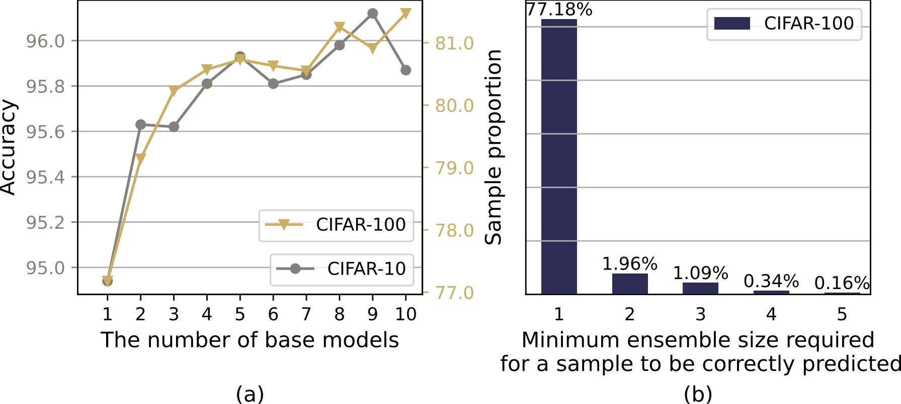
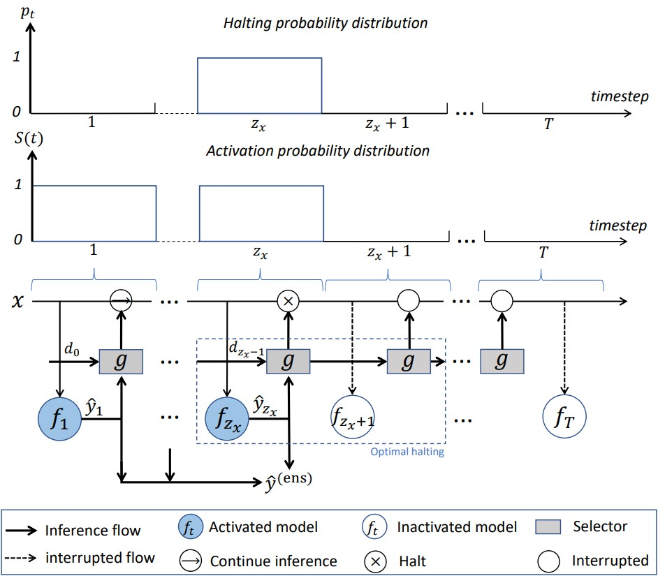
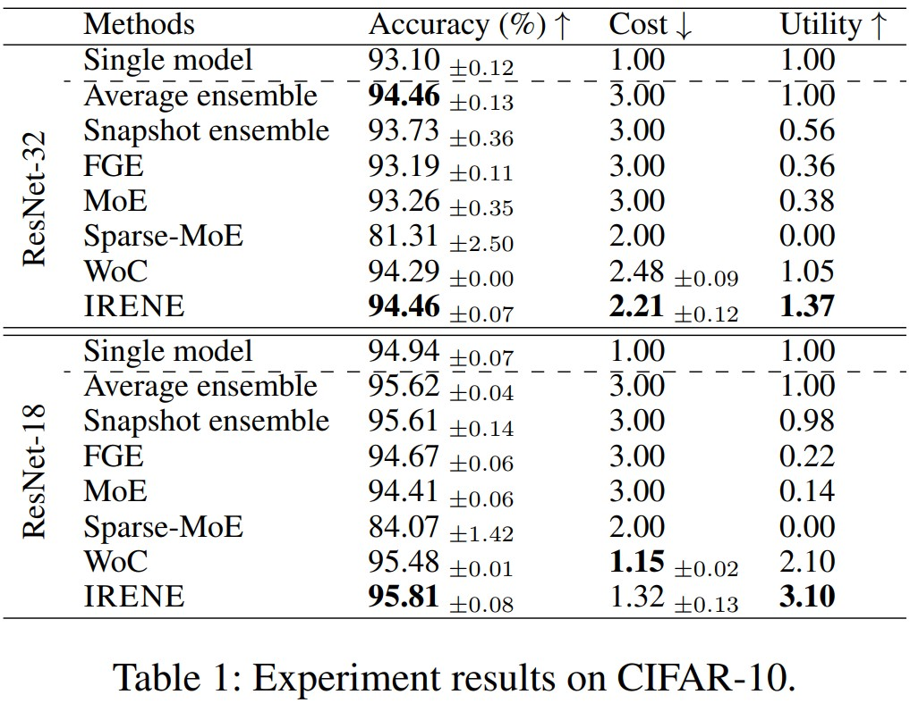
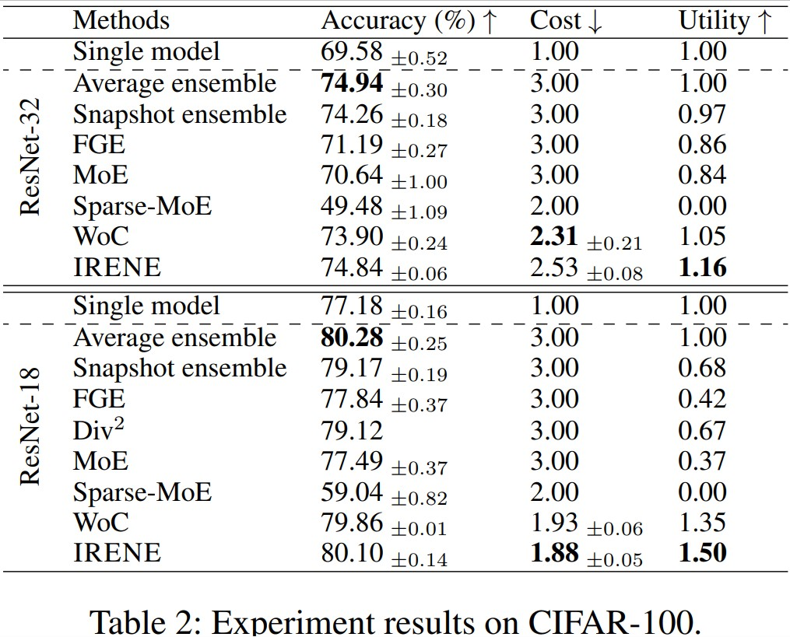
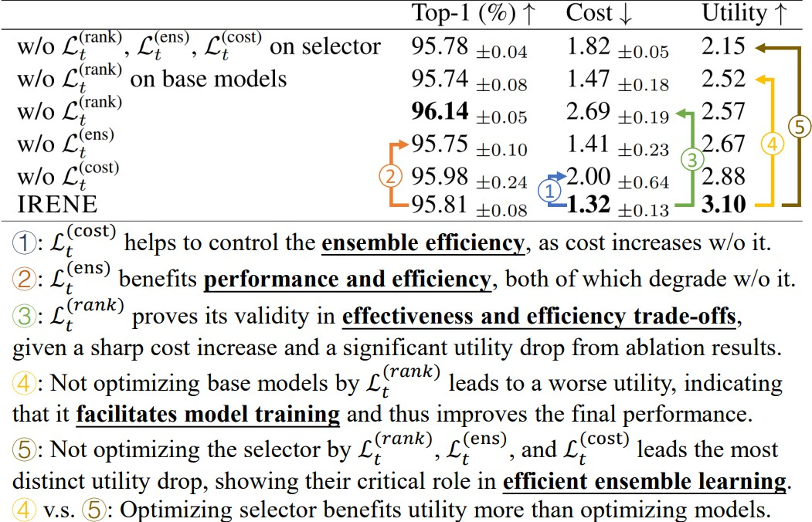

Towards Inference Efficient Deep Ensemble Learning
Arxiv: https://arxiv.org/abs/2301.12378
Code: TBD
Authors
- Ziyue Li (Microsoft Research Asia) litzy0619owned@gmail.com
- Kan Ren (Microsoft Research Asia) kan.ren@microsoft.com
- Yifan Yang (Microsoft Research Asia) yifanyang@microsoft.com
- Xinyang Jiang (Microsoft Research Asia) xinyangjiang@microsoft.com
- Yuqing Yang (Microsoft Research Asia) yuqing.yang@microsoft.com
- Dongsheng Li (Microsoft Research Asia) dongsli@microsoft.com
Abstract
Ensemble methods can deliver surprising performance gains but also bring significantly higher computational costs, e.g., can be up to 2048X in large-scale ensemble tasks. However, we found that the majority of computations in ensemble methods are redundant. For instance, over 77% of samples in CIFAR-100 dataset can be correctly classified with only a single ResNet-18 model, which indicates that only around 23% of the samples need an ensemble of extra models.
To this end, we propose an inference efficient ensemble learning method, to simultaneously optimize for both model effectiveness and efficiency in ensemble learning. More specifically, we regard ensemble of models as a sequential inference process and learn the optimal halting event for inference on a specific sample. At each timestep of the inference process, a common selector judges if the current ensemble has reached ensemble effectiveness and halt further inference, otherwise filters this challenging sample for the subsequent models to conduct more powerful ensemble. Both the base models and common selector are jointly optimized to dynamically adjust ensemble inference for different samples with various hardness, through the novel optimization goals including sequential ensemble boosting and computation saving.
The experiments with different backbones on real-world datasets illustrate our method can bring up to 56% inference cost reduction while maintaining comparable performance to full ensemble, achieving significantly better ensemble utility than other baselines.
Algorithm Overview
In this paper, we propose an InfeRence EfficieNt Ensemble (IRENE) learning approach that systematically combines ensemble learning procedure and inference cost saving as an organic whole.
As illustrated in the above Figure, in our framework, all the base models are kept ordered for training (ensemble learning) and inference (ensemble inference). During the inference process for a given sample, each base model will be activated for inference until the optimal halting event occurs, which has been decided by the jointly trained selector. And all the predictions of the activated models will be aggregated for ensemble output.
As for optimization, the leveraged base models and the selector are jointly optimized to (i) encourage the base models to specialize more on the challenging samples left from the predecessor(s) and (ii) keep the ensemble more effective when leveraging newly subsequent model(s) while (iii) reducing the overall ensemble costs.
Experiment Results
We demonstrate the effectiveness of IRENE on two benchmark datasets, CIFAR-10 and CIFAR-100, using two different backbones, with results shown in the following two tables, respectively.
 Further Analysis of Optimization Objectives
We perform ablation studies to analyze the effects of our propose objectives, to provide more insights as shown in the following figure.
Related Works
Wisdom of Committees: An Overlooked Approach To Faster and More Accurate Models